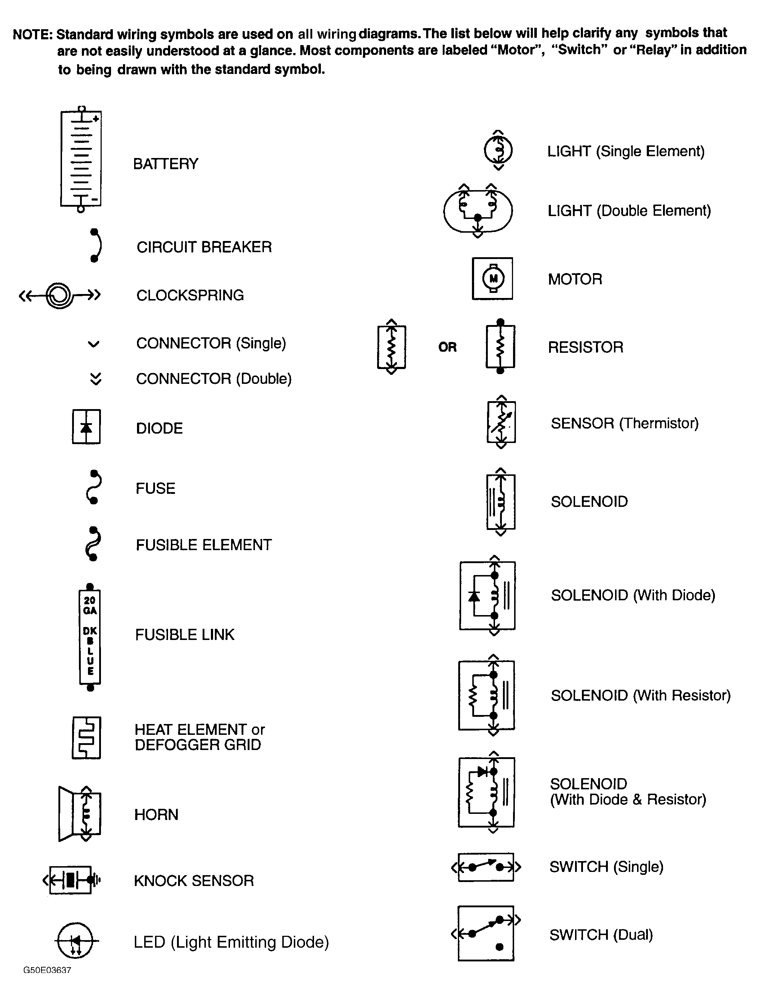

LEMON Manuals
: Even more car manuals for everyone: 1960-2025
Home
>>
Hyundai
>>
2022
>>
Elantra N Line, Standard Trans
>>
Repair and Diagnosis
>>
Quick Lookups
>>
Wiring Diagrams
>>
Using lemon2025'S System Wiring Diagrams
>>
Wiring Diagram Symbols
Wiring Diagram Symbols
Fig 1: Identifying Standard Wiring Diagram Symbols
